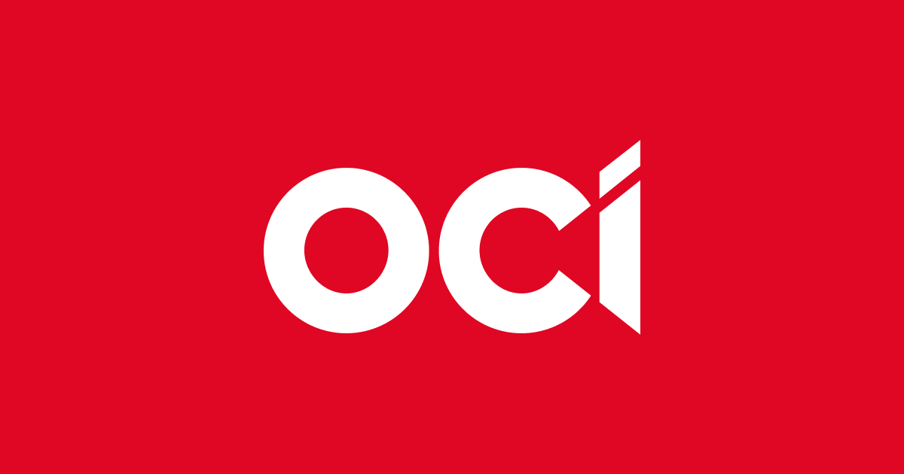

대표 로고대표 브랜드 마크
대표 로고대표 브랜드 마크홈 > 브랜드 매거진 > 한솔케미칼
한솔케미칼
한솔케미칼(Hansol Chemical)은 과산화수소와 반도체·디스플레이 전자소재를 주력으로 하는 한국의 정밀화학 기업이다.
산업 분야 브랜드·비즈니스 · 공개 등급 자료 기반 · 브랜드 평가 4 ★
한눈에 보는 브랜드
한솔케미칼(Hansol Chemical)은 1980년 한국퍼록사이드로 설립돼 과산화수소 사업으로 출발했으며 1994년 한솔그룹에 편입됐다. 제지·정밀화학 약품을 기반으로 반도체·디스플레이용 전자소재로 사업을 확장한 정밀화학 기업이다.
브랜드 아이덴티티
과산화수소에서 출발해 반도체 전자소재로 영역을 넓힌 한솔그룹의 정밀화학 기업이다.
제품과 서비스
대표 제품과 서비스 정보는 편집 검수 후 공개됩니다.
타임라인
정리된 연도형 이벤트가 없습니다.
BI/CI 변천사
대표 로고대표 브랜드 마크함께 읽을 브랜드

브랜드·비즈니스 · 자료 기반OCIOCI(오씨아이)는 폴리실리콘과 카본화학을 주력으로 하는 한국의 화학·신재생에너지 소재 기업이다.
 브랜드·비즈니스 · 자료 기반금호석유화학
브랜드·비즈니스 · 자료 기반금호석유화학금호석유화학(Kumho Petrochemical)은 합성고무·합성수지·정밀화학을 주력으로 하는 한국의 석유화학 기업이다.
 브랜드·비즈니스 · 자료 기반효성티앤씨
브랜드·비즈니스 · 자료 기반효성티앤씨효성티앤씨(Hyosung TNC)는 스판덱스 브랜드 크레오라를 주력으로 하는 한국의 섬유·무역 기업이다.
 브랜드·비즈니스 · 자료 기반에쓰오일
브랜드·비즈니스 · 자료 기반에쓰오일에쓰오일(S-Oil)은 사우디 아람코가 최대주주인 한국의 정유 기업으로, 1976년 설립돼 2000년 현 사명이 됐다.
 브랜드·비즈니스 · 자료 기반효성
브랜드·비즈니스 · 자료 기반효성효성(Hyosung)은 섬유·중공업·화학을 아우르는 한국의 복합 기업집단으로, 1966년 동양나일론에 뿌리를 둔다.
KI
코오롱인더스트리
브랜드·비즈니스 · 자료 기반코오롱인더스트리코오롱인더스트리(Kolon Industries)는 산업자재·화학소재·필름·패션을 영위하는 한국의 종합 소재·화학 기업이다.
KC
KCC
브랜드·비즈니스 · 자료 기반KCCKCC(케이씨씨)는 도료(페인트)·건축자재·실리콘을 주력으로 하는 대한민국의 종합 화학·소재 기업이다.
 브랜드·비즈니스 · 편집 검수페덱스
브랜드·비즈니스 · 편집 검수페덱스페덱스(FedEx)는 미국 멤피스에 본사를 둔 글로벌 특송·물류 기업이다.